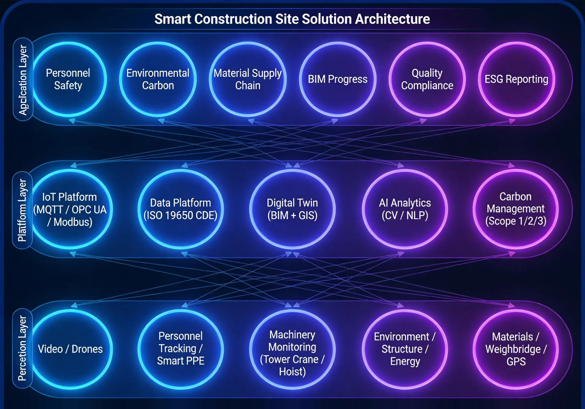

For building construction, municipal, rail transit and industrial plant projects, a smart construction site solution covering six management dimensions - personnel, safety, quality, schedule, materials and environment - that addresses the core pain points of chaotic site personnel management, safety hazards, difficult quality traceability and schedule loss of control, achieving one-platform site management.
Solution Overview
Provides smart construction site solutions covering six management dimensions - personnel, safety, quality, schedule, materials and environment - for building construction, municipal, rail transit and industrial plant projects, addressing chaotic personnel management, safety hazards, difficult quality traceability and schedule loss of control, and achieving one-platform site management.
Applicable to: Building construction projects, municipal works, rail transit, industrial plants.
- AI visual analysis maintains high accuracy in field testing
- Multi-terminal collaboration covering all project roles
- True unified management across all six dimensions
Benefits: Safety incident rate reduced by 40%+, schedule delays cut by 25%, material waste reduced by 15%.
Business Challenges
On civil engineering sites, customers often face chaotic personnel management, safety hazards, hard-to-trace quality and opaque schedules, and urgently need one platform managing personnel, safety, quality, schedule, materials and environment together.
Chaotic personnel management
High worker turnover makes real-name registration hard; attendance is tedious and wage disputes are frequent.
Safety hazards abound
Deep pits, high formwork and tower cranes carry high risk; paper-based inspections make hazard tracking difficult.
Hard-to-trace quality
Acceptance records are scattered; responsibility is unclear and rectification lacks closed-loop tracking.
Opaque schedules
Progress depends on manual reporting; deviations surface late and delays pile up.
Six dimensions, one platform
Personnel, safety, quality, schedule, materials and environment should be managed in one system.
Digital site awareness
AI vision and environment monitoring should expose hazards in real time and close the loop on them.
Typical Scenarios:
Target Roles: Project managers, safety officers, quality inspectors, foremen, supervising engineers.
Solution Architecture
Built on a three-tier “command center - project site - work face” architecture covering six management dimensions (personnel, safety, quality, schedule, materials, environment), with integration to BIM systems and subsystems such as video surveillance and access attendance.

The three tiers converge bottom-up: the work face handles daily reporting and inspection, the project site captures personnel, vehicle and environment data, and the command center tracks each site's progress, safety alerts and attendance.
Core Modules
Real-name personnel management
Face-recognition access with attendance statistics to enforce real-name registration and reduce wage disputes.
Safety management
AI cameras detect violations and alert automatically; hazard rectification is tracked to closure.
Quality management
Inspection, first-article acceptance and rectification digitized for traceable responsibility.
Schedule management
Planned versus actual progress visible in real time with early deviation warnings.
Materials management
Digital control of material entry, issue and consumption to cut waste.
Environment management
Online dust and noise monitoring with automatic sprinkler linkage on exceedance.
Integration Capabilities:
- All subsystem data converges to the command center dashboard
- AI cameras detect safety violations and alert in real time
- Environment exceedance automatically triggers sprinkler dust suppression
- BIM linkage for 3D schedule visualization
Advantages & Delivery
With years of project practice in six-dimension integrated smart construction site design, we deliver management value through lower incident rates and schedule risk, implemented with local deployment, multi-terminal training and continuous operations.
Differentiated Advantages
AI Visual Analysis
Computer vision keeps high accuracy in field conditions, auto-identifying violations and making safety proactive.
Six-Dimension Integration
Truly unified management of staff, safety, quality, schedule, materials and environment — one platform per site.
Multi-Client Collaboration
WeChat mini-program, PC web, TV board, APP and H5 cover every project role with real-time sync.
Years of Project Practice
Implemented on multiple African engineering projects, verified across site scales with low delivery risk.
Offline Operation
Adapted to local African networks: offline operation with data sync keeps work running through outages.
BIM Linkage
Linked with the BIM lightweight system to locate schedule, quality and safety issues in 3D.
Implementation Process
Requirement Research
Sort out control priorities and existing facilities.
Solution Design
Output the six-dimension deployment and integration plan.
Hardware Deployment
Install access gates, cameras and environment monitors.
Platform Configuration
Configure organization, processes and alert rules.
System Integration
Aggregate subsystem data and link BIM.
Training & Handover
Multi-client training and acceptance.
Continuous O&M
Remote support and continuous upgrades.
Service Guarantee
Client Value
Accident rates effectively reduced, fewer schedule delays, less material waste, and a comprehensive rise in refined project management.
One-year warranty
Remote O&M support
Continuous platform upgrades
Periodic inspection and maintenance
Case Studies
Government Office Building Smart Construction Site System
Background: A government office building construction project in Lagos, Nigeria.
Challenge: Frequent site access and manual safety records left the project without unified digital management.
Solution: Deployed a smart-site platform covering all six dimensions: staff, safety, quality, schedule, materials and environment.
Results: The system runs stably on site, lowering both accident rate and schedule risk.